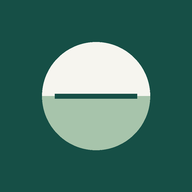
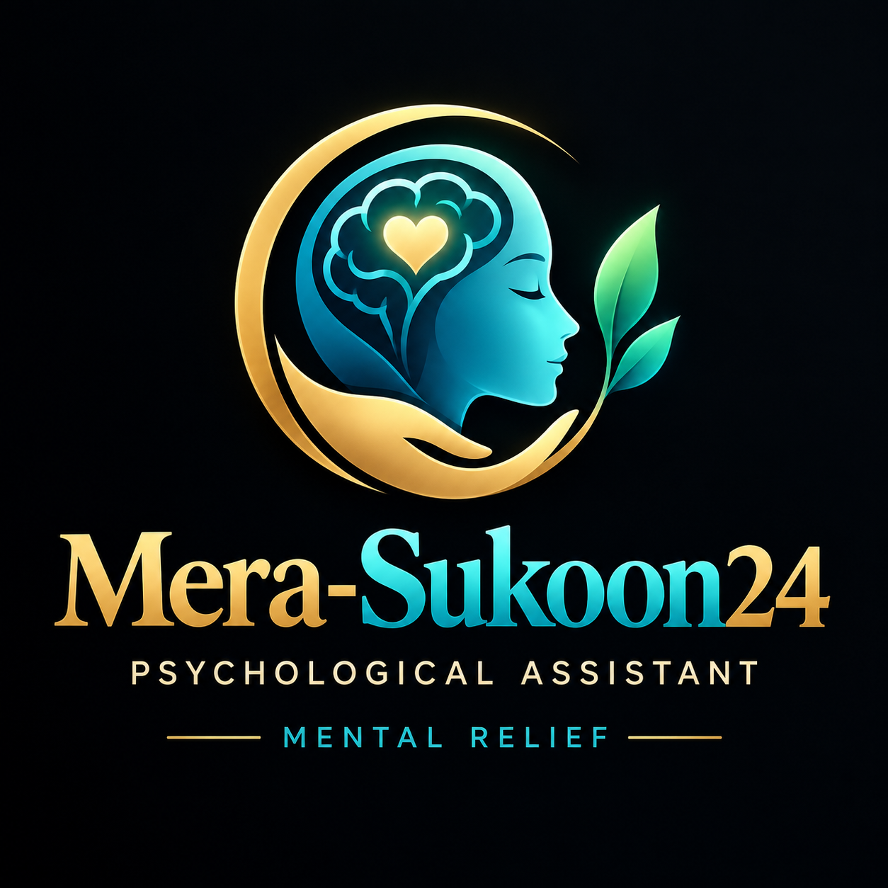

Comfortable breathing
Let your breath move gently, without forcing it or holding it. The timer is optional: follow your own comfortable pace. Stop if you feel dizzy, short of breath or more distressed.
Ready when you are.

Mera-Sukoon24 سکونNeed urgent support?Critical labels and summaries can be translated; detailed tools and reading remain English. Translations await independent review.
Installation & device checks
A SMALL STEP, AT YOUR OWN PACE
Free reading and gentle tools for a more manageable day. Start wherever you are.
Find a starting pointExplore the reading shelf ↗No account. No paid API. No ads.
A GENTLE START
Choose a topic and language for this planner. Other tools remain in English. No account, clinical score or AI response is involved.
01 / CHECK IN
A topic-based reflection, not a validated screening test. You can skip it.
RESPECT & DIGNITY
Reflect on harmful behaviour, its impact and safe ways forward. This structured educational response uses your choices; it is not AI chat, a diagnosis, a legal verdict or an individual assessment by an expert.
02 / YOUR READING SHELF
Official books, workbooks and practical guides. Open the publisher's page to read or download available materials; publisher terms apply. Downloads and language availability vary.
03 / PAUSE HERE
Let your breath move gently, without forcing it or holding it. The timer is optional: follow your own comfortable pace. Stop if you feel dizzy, short of breath or more distressed.
Ready when you are.
Keep your eyes open if that feels safer. You can skip any sense or stop at any time.
Notice five things you can see.
An optional sensory exercise, not emergency care. No need to touch, smell or taste anything unsafe.
04 / SOMETHING SMALL
Movement, connection, learning, kindness and rest can support wellbeing. This app does not measure dopamine or promise to increase it. No “dopamine detox”, supplements, streak penalties or reward pressure.
05 / NOTICE, WITHOUT JUDGEMENT
Optional reflection: describe a situation, what went through your mind, and a kinder or more balanced response. Avoid details that could put you at risk on a shared device.
Off by default. With this off, entries stay in this tab's memory and disappear when the page reloads. Turning it on also saves anything already entered in this session. Browser storage is not encrypted by Sukoon; other people using this browser may see it. Private mode or clearing browser data may remove it.
The tools send no check-ins or reflections to a server. The hosting provider still receives ordinary page requests. Publisher links leave Sukoon and use that site's privacy rules. Downloaded exports contain your notes in plain text. Restoring an export replaces this tab’s records only after you confirm. Reports and planner selections are not saved.
Session only.
If you are in immediate danger, seek local emergency help now or ask a trusted person nearby to help you reach it. This app cannot monitor your safety or contact services for you. Use a safer device if someone is monitoring yours.
If distress persists, worsens or interferes with daily life, speak with a qualified mental health professional. Self-help can complement that support.